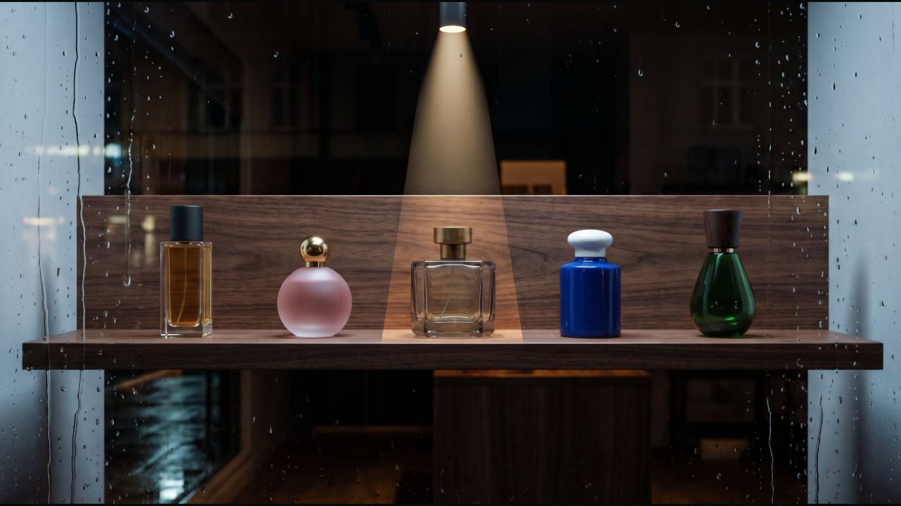
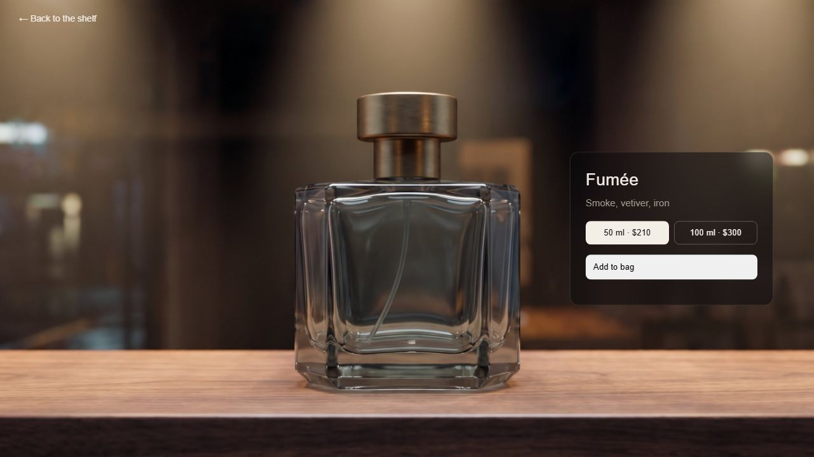
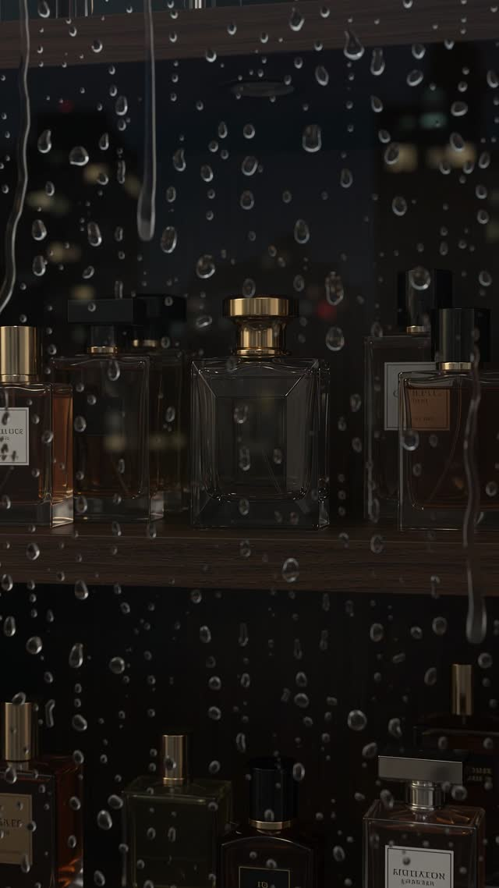
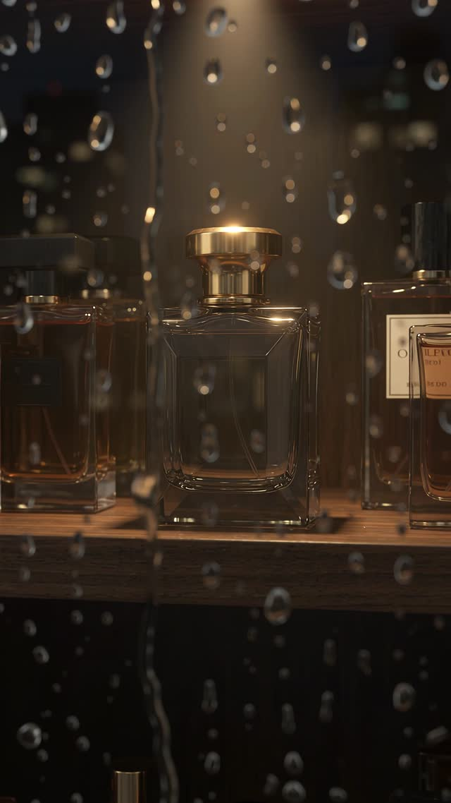
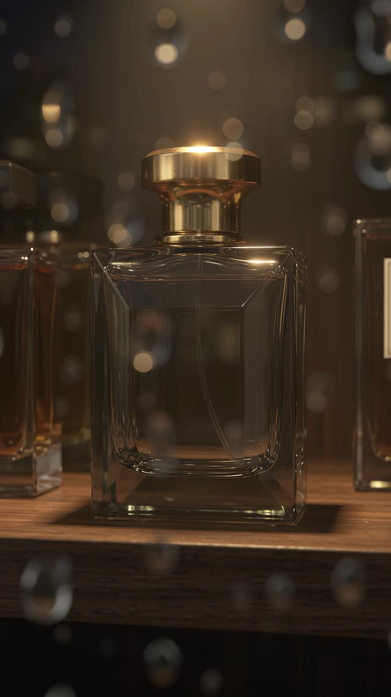
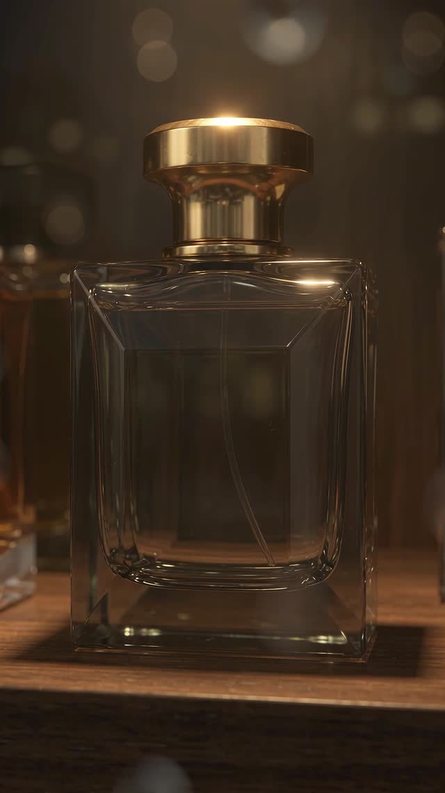

Interaction study · Front end · AI imagery · 2026
Spotlight Shelf
Study
A practice build to learn how premium product sites create atmosphere. A dark shelf of five perfume bottles: hover one and a spotlight finds it, click or tap and the camera glides in to a product card. It is plain HTML, CSS and JavaScript, with no 3D engine.
Interaction study, inspired by Ascenta Studio's PLUIE concept; images AI-generated by Mika


01 · Brief
What I wanted to learn, and what I built
Premium product sites feel calm and expensive. How much of that comes from light and timing rather than heavy 3D?
Everything in the study: I generated the images with AI, wrote the HTML, CSS and JavaScript, and tuned the timing by eye.
A one-page demo with five bottles. Hover lights one bottle. A click or tap zooms in, crossfades to a close-up for three of the bottles, and shows a card with two sizes.
Finished study, live on this site. The images are local files, so the demo makes no outside requests.
02 · Component architecture
Image layers, one state variable, four handlers, one card
The page has three image layers and an overlay. A single open variable says whether the visitor is browsing (-1) or looking at one bottle. Four small functions change the layers. The bottle data (names, notes, sizes and hit-area positions) is one array, P.
Diagram is wide: scroll it sideways.
Source: demo/demo.js (P, CLOSE, open, light, zoom, card and the Back handler), demo/demo.css and demo/index.html.
How the light works
- The shelf is two matching images of the same generated scene, one dark and one lit. The lit one sits on top, hidden.
- On hover,
light(i)gives the lit layer aclip-pathpolygon: narrow at the top of the frame, wider just below the bottle. Only that cone of the lit image shows, and it fades in over 0.45 s. The light looks real because it is a real lit render, just masked. - Each bottle's hit area is a
divplaced in percent of the image, so it stays on the bottle at any screen size. I tuned the positions by eye.
03 · Asset pipeline
From AI renders to five light JPGs
The practice build linked to five PNGs on an image CDN. The site's Content Security Policy only allows images from the site itself, so those links were blocked here. I downloaded the images once and saved them as JPG. That cut the weight from about 30 MB to about 2 MB, and the demo now loads only its own files.
Diagram is wide: scroll it sideways.
Source: the image comment and file paths in demo/demo.js; the CDN links in the private practice file; the image files in demo/media/ (sizes measured); the before-and-after weights recorded when the demo moved onto this site.
04 · Interaction workflow
Hover, select, read the card, close
The timing carries the effect. The camera move takes 1.4 s with a slow-in, slow-out curve. The card starts to appear 650 ms after the click, about halfway through the move, and the close-up starts to fade in at 700 ms.
Diagram is wide: scroll it sideways.
Source: light, zoom, card, the Back handler and the Escape listener in demo/demo.js; the 1.4 s cubic-bezier(.65,0,.35,1) transition and the 0.45 s, 0.5 s and 0.7 s fades in demo/demo.css.




05 · Privacy
No data collected
- The demo collects nothing. No cookies, no local storage, no forms and no analytics. The only requests it makes are for its own files on this site.
- No third parties in the demo. The scene images used to come from a remote CDN; they are now local files. The demo uses system fonts.
- Locked down by policy. Both pages carry the site's Content Security Policy: scripts, styles and images from this site only (plus Google Fonts for styles and fonts),
form-action 'none'andobject-src 'none'. There is no inline script. - This write-up page loads its fonts from Google Fonts, like the rest of the portfolio. That is the only outside request.
- Nothing real is shown. The bottle names, notes and prices are invented, and the images are AI-generated. There are no people, real products or brands.
06 · Stack
Three files and five images
- HTML: one page with the image layers, the card and the Back button.
- CSS:
clip-pathfor the light cone,transformwith a 1.4 s transition for the camera, opacity crossfades, andbackdrop-filterblur for the glass card. - JavaScript: 46 lines, no framework, no build step and no 3D library. The code only sets classes, styles and image sources.
- Images: AI-generated scenes (Higgsfield, Nano Banana Pro) and frames from an AI video, served as JPG.
07 · Results
What the study produced
- A working shelf where light and a camera move follow the visitor, built from two still images and CSS.
- The demo now runs under the site's strict security policy with no exceptions: no inline code and no remote images.
- The main lesson: atmosphere comes from timing and light, not heavy 3D. Easing curves, a short delay before the card and a slow 1.4 s camera move did more for the premium feel than any extra effect.
08 · Limitations
What it does not do
- On touch screens there is no hover preview: the first tap zooms straight in.
- The bottles cannot be reached with the keyboard: the hit areas are not focusable. Escape does close the card.
- “Add to bag” does nothing. There is no cart, and the prices are made up.
- The hit areas are tuned by eye for this one image. A new shelf photo would need new positions.
- Only three of the five bottles have a close-up image. The other two zoom into the shelf image itself.
- The stage fills the screen and crops the sides on tall, narrow screens. On a phone held upright, the outer bottles (1 and 5) sit off-screen and cannot be tapped. Turn the phone sideways, or use a desktop, to see all five.
09 · What's next
If I take it further
- Make the bottles real buttons, so keyboard users can move between them and open the card with Enter.
- Add a hover-like first tap on touch screens: light first, zoom on the second tap.
- Generate close-ups for the remaining two bottles.
- Respect the reduced-motion setting with a shorter, simpler zoom.